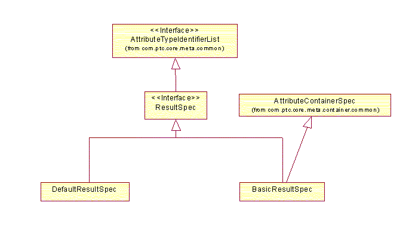

See: Description
| Interface | Description |
|---|---|
| CriteriaAugmentor |
This interface specifies methods that augment the criteria that are used
in the query.
|
| CriterionSpec |
This interface provides the abstraction for specifying the criteria for a
type based query.
|
| ResultSpec |
This interface provides the abstraction for specifying the results of
a type based query.
|
| TypePagingSession |
This interface provides the abstraction for information used in paging.
|
| Class | Description |
|---|---|
| BasicCriteriaSpec |
This class provides a basic mapped implementation for specifying the criteria
for a type based query.
|
| BasicResultSpec |
This class provides a basic implementation of a result specification.
|
| CompositeCriteriaSpec |
This class provides an implementation for specifying the criteria for
a type based query.
|
| CriteriaHelper |
This helper class provides static methods for constructing criteria
objects that can be used for queries.
|
| DefaultCriteriaSpec |
This class provides a default implementation for specifying the criteria for
a type based query.
|
| DefaultResultSpec |
This class provides a default "wrapper" implementation based on an existing
AttributeTypeIdentiferList.
|
| Exception | Description |
|---|---|
| QueryException |
This class is used for Exceptions related to query processing.
|
Query Specification
Queries are specified by the ResultSpec,
com.ptc.core.meta.container.common.AttributeContainerSet (criteria), and
com.ptc.core.meta.common.SortSpec. Only the ResultSpec is required. Each specification object uses
AttributeTypeIdentifiers to reference attributes of types. The actual TypeInstances that are returned by
the query are inferred from the AttributeTypeIdentifiers.
Result Specification

The ResultSpec is a list of AttributeTypeIdentifiers that specify the
attributes that should be returned by the query. Each AttributeTypeIdentifier can be associated with a function
that specifies additional processing for the attribute. The DefaultResultSpec
and BasicResultSpec are concrete classes that can be used directly.
The DefaultResultSpec is used as a simple wrapper of an AttributeTypeIdentifierList. The BasicResultSpec
provides additional capabilities for specifying functions. The following code snippets show how these
capabitlities are used.
BasicResultSpec resultSpec = new BasicResultSpec();
// Specify non-persisted derived attribute
NonPersistedAttributeTypeIdentifier location = ..;
DerivedAttributeContainerFunction locationFunction = new DerivedAttributeContainerFunction("location");
resultSpec.putEntry(location, locationFunction);
// Specify non-persisted function
AttributeTypeIdentifier name = ..;
NonPersistedAttributeTypeIdentifier lowerCaseName = ..;
DataStoreAttributeContainerFunction lowerFunction = new DataStoreAttributeContainerFunction(SQLFunction.LOWER);
lowerFunction.setArgumentAt(name, 0);
resultSpec.putEntry(lowerCaseName, lowerFunction);
The ResultSpec also defines a list of target TypeIdentifiers. The type based query
will retrieve TypeInstances for all of the specified targets. If no list is explicitly specified, then the list is
derived from the AttributeTypeIdentifiers in the query request.
Criteria Specification
Query criteria are specified using com.ptc.core.meta.container.common.AttributeContainerSet
and AttributeContainerFunction classes from the
Meta Container package. These criteria
restrict or filter the TypeInstances (AttributeContainers) that are returned as results. The
AttributeContainerSet represents either a single condition or a number of conditions combined together
using a logical operator (i.e. AND or OR). AttributeContainerSets support arbitrary nesting of conditions
so complex criteria trees are possible.
Consider the criteria tree,
An overall logical OR of two conditions is used. One of these conditions is itself a logical AND composite of two other conditions. The leaf conditions in the criteria tree specify filtering conditions on AttributeTypeIdentifiers. An AttributeContainerFunction is used to hold the AttributeTypeIdentifier and represents a boolean expression that is evaluated as part of the criteria processing. The most often used boolean expression is a comparison of AttributeTypeIdentifier values and a DataSet. The following table describes how DataSet implementations are used to specify filtering criteria. See the Meta package for complete details on these classes.
|
|
Description |
SQL Equivalent |
|
Used for describing value ranges (including unbounded ranges) |
between, greater than, less than |
|
|
Pattern matching for String values |
like |
|
|
Absence or existence of a value |
is null, is not null |
|
|
List of values |
in, equals |
|
|
|
List of EnumeratedType values |
in, equals |
To simplify building criteria using AttributeContainerSets and AttributeContainerFunctions, the helper class,
CriteriaHelper, is provided. It contains static methods that will construct
an AttributeContainerSet for a specified condition. The following sample code shows how the example
criteria tree above can be constructed.
AttributeContainerSet[] conditions;
AttributeTypeIdentifier name = ..;
AttributeTypeIdentifier width = ..;
AttributeTypeIdentifier length = ..;
conditions = new AttributeContainerSet[2];
conditions[0] = CriteriaHelper.newCriteria(name, WildcardSet.CONTAINS, "bolt", true /* Negate */);
conditions[1] = CriteriaHelper.newCriteria(width, new Integer(100), new Integer(500));
CompositeAttributeContainerSet andCondition = new CompositeAttributeContainerSet(conditions, false /* Intersect(AND) */);
conditions = new AttributeContainerSet[2];
conditions[0] = CriteriaHelper.newCriteria(length, new Integer(1234), false /* Do not negate */);
conditions[1] = andCondition;
CompositeAttributeContainerSet orCondition = new CompositeAttributeContainerSet(conditions, true /* Union(OR) */);
The query layer supports AttributeContainerFunctions that directly filter types. These AttributeContainerFunctions can be used in composite criteria, but they must be intersected with the other criteria. The following implementations are supported.
com.ptc.core.query.common.ContainerSpecConditionAttributeContainerFunction
com.ptc.core.query.common.LatestAttributeContainerFunction
com.ptc.core.query.common.RootTypeConditionAttributeContainerFunction
com.ptc.core.query.common.RelationalConfigSpecAttributeContainerFunction
TypeIdentifier typeId = ..;
RelationalConfigSpecAttributeContainerFunction function =
new RelationalConfigSpecAttributeContainerFunction();
function.setTypeDefinition(typeId);
function.setRelationalConfigSpec(new LatestConfigSpec().getRelationalConfigSpec());
AttributeContainerSet configSpecCriteria =
CriteriaHelper.newCriteria(function, false /* do not negate */);
Criteria can also be associated with a target TypeIdentifier. The BasicCriteriaSpec can
be used to associate a target TypeIdentifier with a corresponding AttributeContainerSet.
Sort Specification
The com.ptc.core.meta.common.SortSpec is an ordered list of AttributeTypeIdentifiers that is used to
specify the order of the TypeInstances returned by the query. This interface and implementations are defined
in the Meta package. The sort order is based on the
index of the AttributeTypeIdentifiers. For example, the AttributeTypeIdentifier at index zero is the
primary sort order, the AttributeTypeIdentifier at index one is the secondary sort order, and so on. Each
AttributeTypeIdentifier has associated boolean "ascending" and "case sensitive" attributes. If the ascending
attribute is true, then the values specified by the associated AttributeTypeIdentifier are sorted in ascending
order instead of descending order. The case sensitive attribute applies only to AttributeTypeIdentifiers for
character data and indicates whether upper or lower case should be considered when sorting those values.
Sorting is always performed with respect to the Locale specified in the Query Command.
Attribute Details
Typically, attributes are defined with respect to a given type and all of its sub-types. However, in some cases, a query may involve types that are not necessarily related through inheritance. In this case, some attributes exist on some of the types and other attributes exist on different types. All queries are executed within the context of a set of target types. The target types can be derived from the contexts of the AttributeTypeIdentifiers that specify the attributes, or the target types can be specified explicitly as a list of TypeIdentifiers. The implicit derivation uses introspection to determine the sub-types where the attributes are defined. The list of sub-types is then combined to form the set of target types. The explicit target types are specified as an attribute of the ResultSpec.
The entire query is executed using all of the target types. For each target type, a given attribute may not exist. In this case, the attribute is treated as if it exists, but has a null value.
For results, a null value is not returned in the result TypeInstance.
For critiera, an expression containing a null value has the following evaluatation rules.
For sorting, attributes that do not exist for a given target type are treated as null values. Ascending sort places null values at the end. Descending sort places null values at the beginning.
Queries are executed via the Command subsystem and query specific commands are located in the Query Command package.
Streaming Results
Queries can be executed on the server using a streaming mechanism. With query commands, the entire result set is built and exists in memory at one time before it is returned to the caller. With streaming,results are made available to the calling code via a callback mechanism as soon as they are available. The query layer does not hold on to the result once it is passed to the callback object.
The main callback class com.ptc.core.query.server.ResultCollector
requires the calling code to provide a com.ptc.core.query.server.ResultContentMap
for each TypeInstanceIdentifier that is processed.
The com.ptc.core.query.server.impl.AbstractStreamingResultCollector is a simplified
implementation that processes TypeInstance
objects directly. The streaming mechanism is invoked by calling a method directly on the
com.ptc.core.query.server.impl.BasicQueryService and passing
a ResultCollector instance. Note that the
streaming callback methods may be called more than once for the same
TypeInsanceIdentifier/TypeInstance.
The following code is an example of using the streaming mechanism.
final BasicQueryService QUERY_SERVICE = BasicQueryService.getInstance();
QUERY_SERVICE.query(resultSpec, criteriaSpec, sortSpec, locale,
true /* latest */, new StreamingResultCollector());
public static class StreamingResultCollector extends AbstractStreamingResultCollector
{
public boolean addResult(TypeInstance a_typeInstance) throws WTException
{
boolean continueProcessing = true;
// Process TypeInstance
return continueProcessing;
}
}